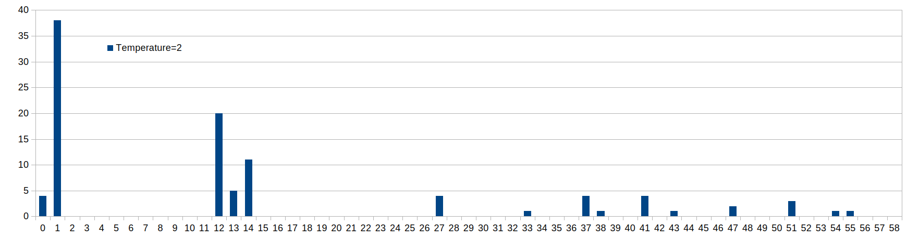

March 1, 2026
J. Heaton class_10_3_text_generation
The example in chapter 10.3 uses an LSTM network to generate text.
The code first turns a piece of text into sequences of maxlen (in this case 40) characters,
and the subsequent character for each sequence is used as the y value for the training.
In the inference/prediction phase, a sequence of characters is fed into the trained model, and the output is an
array of probabilities for each of the characters that were present in the original text.
on_epoch_end() function
The function on_epoch_end() is called at the end of each epoch, at which point the model has been trained to the
extent that the model variable can already be used for predictions.
First, a seed is generated by randomly taking a string of length maxlen out of the text.
In a loop, the seed is vectorized into the variable x_pred, and the model is used to create a prediction into
preds.
The function sample() is then called to return the next predicted character.
The next seed is generated by removing the first character, and adding the next predicted character at the
end.
The predicted character is printed to the screen, and the loop continues.
sample() function
The sample() function receives the predictions of each character as probabilities.
Next, the probabilities are adjusted, according to the temperature parameter (See below.)
Then the probabilities are normalized:
preds = exp_preds / np.sum(exp_preds)
each value in a dataset is divided by the total sum of all values in that dataset. This results in a normalized
list where the sum of the new values equals 1.
Finally, an index for the predicted next character is chosen with the multinomial function(See below.)
temperature parameter
What does the temperature parameter in the language prediction do?
It varies the chances of characters with lower probabilities to be selected.
-
temperature < 1:
characters with lower probability than the one with the highest will be made even less likely to be
selected.
-
temperature = 1:
no change.
-
temperature > 1:
characters with lower probability than the one with the highest will be made more likely to be selected
Example of different temperature values
temperature=1.0: (original values)

temperature=0.5:

temperature=2.0:

The following table shows the probability of various characters to be selected:
| Index |
t=0.5
Probability |
t=1
Probability |
t=2
Probability |
| 1 |
95% |
73% |
37% |
| 12 |
4% |
15% |
17% |
t=0.5
ratio |
t=1
ratio |
t=2
ratio |
How much more likely is the character with index 1 to be selected versus the character with index 12?
We can look at the ratio of their probabilities p(1)/p(12).
| 23.4 |
4.8 |
2.2 |
We can see that when the temperature is 0.5, the character with index 1 becomes more likely to be selected.
It is obvious that with a temperature < 1, the character with the original greatest probability will become
even more likely to be selected, which can be considered the more "safe" approach.
The higher we set the temperature, the more chances the originally less likely characters get to be
selected.
Sample Draw: multinomial function
In the final step, the multinomial function returns an index according to the temperature-adjusted probabilities
in the prediction.
The distribution of the drawn samples will be such that it matches the probabilities of the indices.
probas = np.random.multinomial(1, preds, 1)
For example, running the inference 100 times with temperature=2.0 will lead to the following distribution:

March 13, 2026
Chapter 10.5, "Programming Transformers with Keras"
The code includes lines where a function is called and an expression in parentheses is added right after the
parentheses for the function argument, for example:
x = layers.LayerNormalization(epsilon=1e-6)(inputs)
What does this construct do?
Example with f(a)(b):
from "Python functions with multiple parameter brackets"
https://stackoverflow.com/questions/42874825/python-functions-with-multiple-parameter-brackets
f(a)(b) just means that the expression f(a) returns a value that is itself callable.
f(a)(b) calls f with one parameter a, which then returns another function, which is then called with one
parameter b
def func(a):
def func2(b):
return a + b
return func2
Note that func returns a function, not a value.
Applying this to the above code:
x = layers.LayerNormalization(epsilon=1e-6)(inputs)
has the same result as
intermediate = layers.LayerNormalization(epsilon=1e-6)
x = intermediate(inputs)
The code continues with
x = layers.Dropout(dropout)(x)